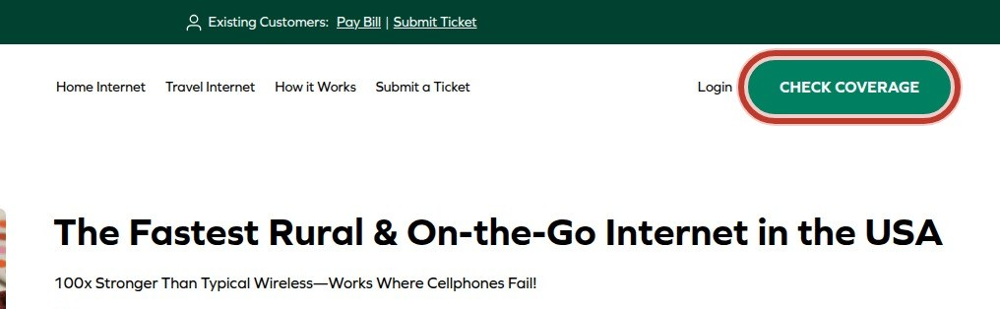
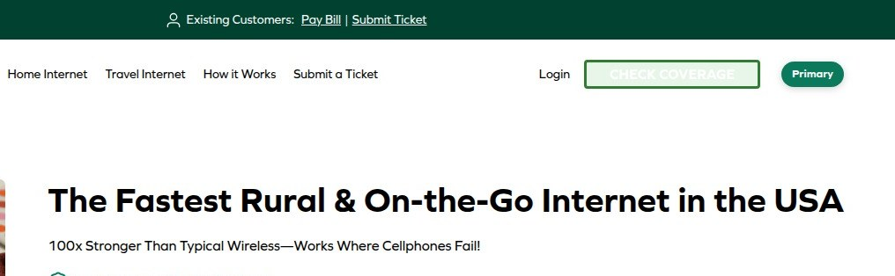
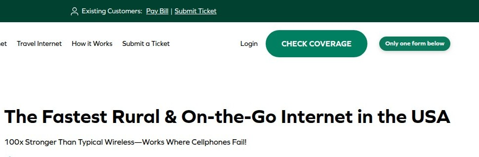
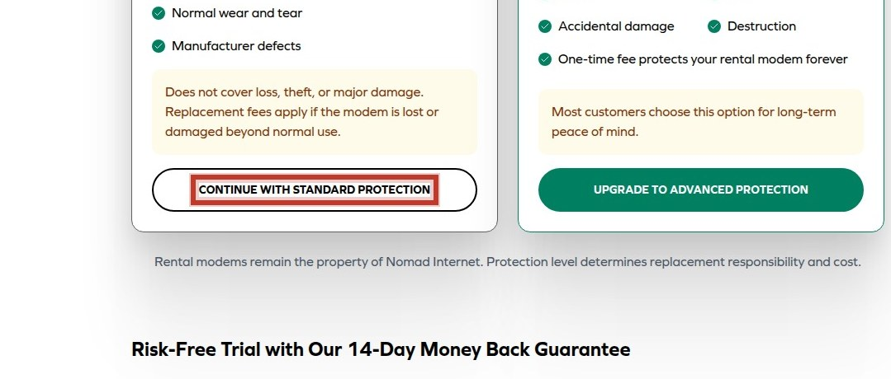
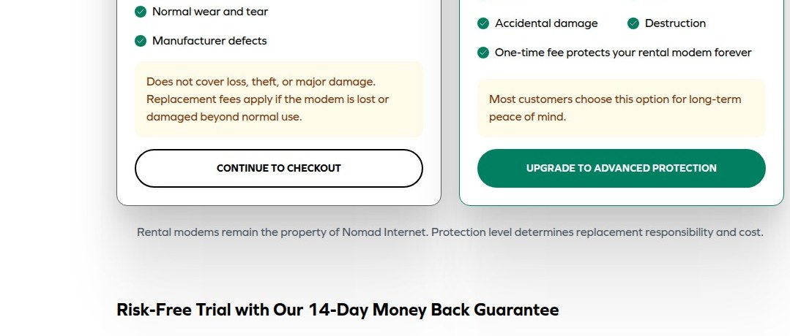
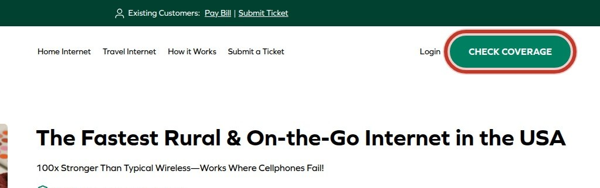
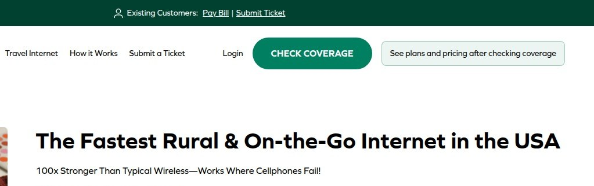
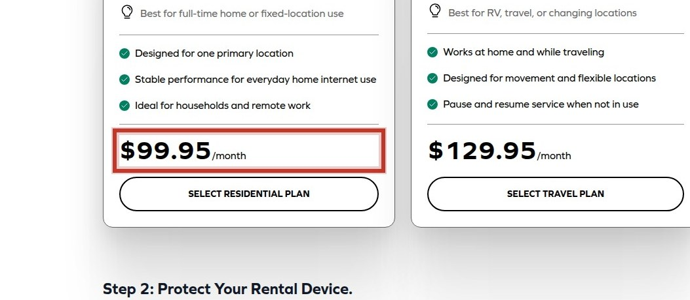
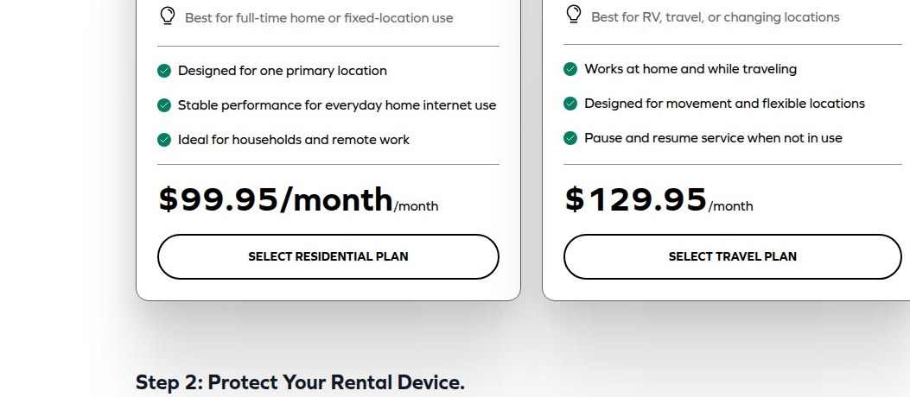

Homepage
Welcome to Our Service
We help you achieve your goals with ease.
How It Works
Step-by-step guide to get started.
What You'll Get
Benefits and outcomes of using our service.
Get StartedDuplicate how-it-works headings confuse path
Repeated 'How It Works' headings create identical-looking entry points, confusing the user's path.


Competing CTAs split focus
Multiple CTAs with no hierarchy create choice overload and dilute the primary conversion path.


Duplicate forms create dead ends
Multiple identical CONTINUE forms on the same page create ambiguity about which form advances the funnel and risk duplicate submissions.


Ambiguous CONTINUE button labels
The submit button labeled only CONTINUE fails to communicate the next step, increasing cognitive effort at the interaction point.


Pricing shown before qualification
Displaying prices before coverage confirmation creates premature commitment barriers and confusion about applicable plans.


Price inconsistencies across pages
Inconsistent price formatting and values across pages undermine trust in quoted costs.